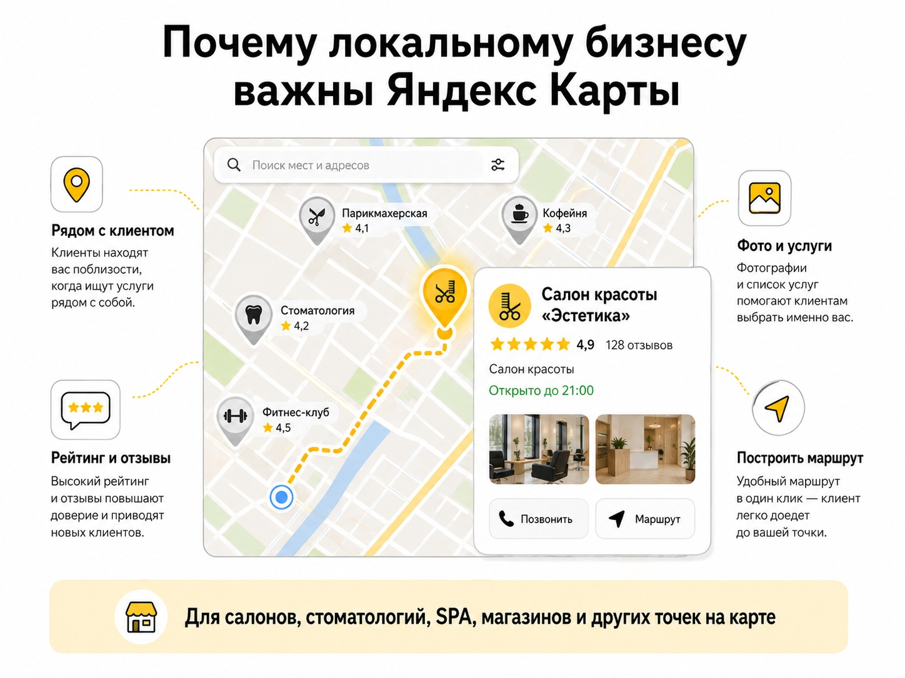
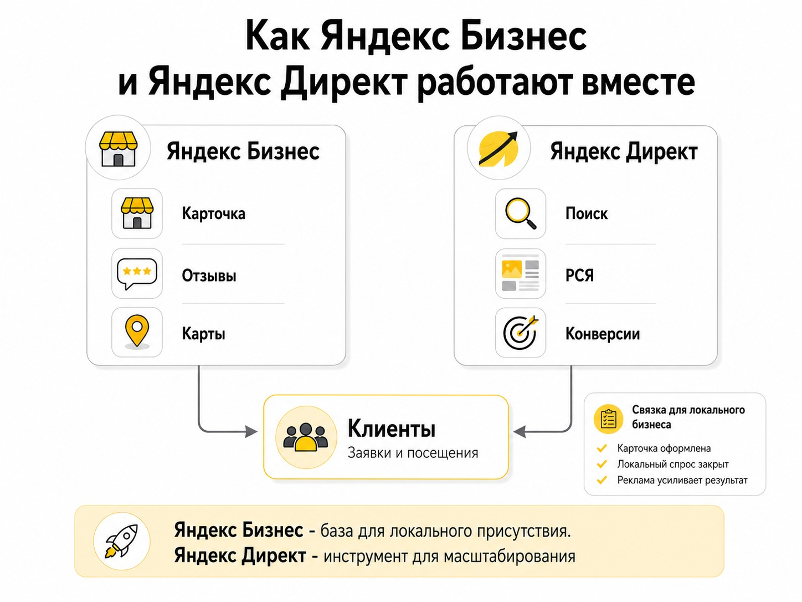

Блог о платном трафике
Чем отличается Яндекс Бизнес от Яндекс Директа
Яндекс Бизнес нужен для присутствия и продвижения компании в Картах и Поиске, а Яндекс Директ - для управляемой рекламы в Поиске, РСЯ, Картах и других площадках.
Для магазина, стоматологии, SPA, салона красоты, кафе, фитнес-клуба, автосервиса и другого бизнеса с физической точкой я бы в первую очередь занялся Яндекс Бизнесом и карточкой в Картах. Здесь местоположение само по себе влияет на решение клиента: человеку важно посмотреть отзывы, фотографии, график работы, понять расстояние и сразу построить маршрут.
Директ нужен уже для другой задачи - когда требуется активнее привлекать аудиторию, масштабировать рекламу, управлять местами показа, аналитикой и рекламной стратегией.

Яндекс Бизнес и Яндекс Директ - разница в двух словах
| Что сравниваем | Яндекс Бизнес | Яндекс Директ |
|---|---|---|
| Основная задача | Карточка компании и локальное продвижение | Полноценная интернет-реклама |
| Особенно полезен | Офлайн-компаниям и локальному бизнесу | Практически любому бизнесу с понятной рекламной задачей |
| Яндекс Карты | Один из основных сценариев использования | Карты тоже доступны как место показа |
| Поиск и другие площадки | Есть автоматическая Рекламная подписка | Можно отдельно настраивать кампании |
| Управление рекламой | Значительная часть решений принимается автоматически | Намного больше настроек и контроля |
| Аналитика и оптимизация | Более упрощенный подход | Работа с Метрикой, конверсиями, аудиториями и стратегиями |
| Порог входа | Низкий | Выше |
Главная ошибка - считать, что это два варианта одного рекламного кабинета. Возможности пересекаются, но исходная задача у сервисов разная.
Что такое Яндекс Бизнес
Яндекс Бизнес - сервис, через который компания управляет присутствием в Яндекс Картах и Поиске. В карточке указываются адрес, телефон, режим работы, фотографии, товары, услуги и другая информация.
Для локального бизнеса такая карточка может быть отдельным источником клиентов даже без классической рекламы. Человек, который ищет стоматологию, салон красоты или кафе, смотрит, что находится рядом, какой у организации рейтинг, сколько отзывов, как она выглядит и как до нее добраться.
Для такого бизнеса карточка в Картах - полноценная точка контакта с клиентом.

Почему офлайн-бизнесу стоит начать с Яндекс Карт
Если клиент физически должен приехать к вам, продвижение карточки часто логичнее тестировать раньше дополнительного рекламного трафика на сайт. Яндекс Бизнес позволяет сделать организацию заметнее в Картах, добавлять товары, услуги, акции и кнопки действия.
Это особенно актуально для стоматологий и медицинских центров, салонов красоты, SPA, кафе, магазинов, фитнес-клубов, автомоек, автосервисов и других компаний, куда клиент приезжает лично.
А разве через Яндекс Бизнес нельзя запустить обычную рекламу?
Можно. В Яндекс Бизнесе есть Рекламная подписка: система может автоматически создавать объявления и размещать их в Картах, Поиске и на внешних площадках, самостоятельно перераспределяя бюджет.
Автоматизация удобна, если предприниматель не хочет разбираться в рекламном кабинете. Но это означает меньший контроль. Если нужен именно рекламный трафик с Поиска или РСЯ, я бы запускал его через Яндекс Директ, а Яндекс Бизнес использовал прежде всего для карточки и локального спроса.
Чем Яндекс Директ отличается от Яндекс Бизнеса
Яндекс Директ изначально построен как рекламная система. Через него можно отдельно работать с рекламой в поисковой выдаче, РСЯ, Картах, списке организаций и других местах размещения.
В Директе можно вести человека на конкретную посадочную страницу, оптимизировать кампанию по заявкам, использовать данные Метрики, исключать нецелевые запросы, разделять кампании по услугам и анализировать стоимость конверсии. Подробнее о механике канала - в статье «Как работает Яндекс Директ».
В Директе тоже появилась реклама в Яндекс Картах
Старое сравнение «Яндекс Бизнес - это Карты, а Директ - это Поиск и РСЯ» уже некорректно. В актуальном Директе Карты можно выбрать отдельным местом показа. Для этого данные организации связываются с карточкой в Яндекс Бизнесе.
Яндекс Бизнес - база для локального присутствия компании. Директ - инструмент управления платным рекламным трафиком.

Что выбрать для салона красоты, стоматологии или магазина
Если для клиента важны расстояние до точки, маршрут, рейтинг и отзывы, сначала стоит нормально оформить карточку в Яндекс Бизнесе и протестировать продвижение в Картах. Затем можно подключать Директ и расширять поток клиентов через Поиск, РСЯ и другие места показа.
Небольшому салону в жилом районе Директ не всегда нужен как обязательный инструмент. Если аудитория выбирает компанию по расстоянию, рейтингу, отзывам и удобству маршрута, Карты могут оказаться более естественным каналом.
Когда без Директа уже сложно
Если компания работает по всему городу, региону или России, клиенту не нужно приезжать в офис либо услуга требует активного привлечения спроса, на первый план выходят посадочная страница, аналитика и стоимость заявки. Это характерно для строительства, B2B-услуг, производства, оптовых поставок, онлайн-обучения, юридических услуг и интернет-магазинов.
В таких задачах Директ обычно важнее. Примеры практической работы собраны в кейсах по Яндекс Директу.
Можно ли использовать Яндекс Бизнес и Директ одновременно
Да, и для локального бизнеса это часто наиболее логичная схема. Яндекс Бизнес отвечает за карточку организации, информацию о компании и локальное присутствие. Директ используется для дополнительного привлечения клиентов через рекламные кампании.
Организацию из Яндекс Бизнеса можно связать с рекламой в Директе, чтобы использовать данные карточки в объявлениях и работать с целевыми действиями организации.
Что в итоге лучше - Яндекс Бизнес или Яндекс Директ
Если у вас локальный офлайн-бизнес, куда клиент должен приехать лично, сначала приведите в порядок Яндекс Бизнес и видимость организации в Картах.
Если нужно масштабное привлечение рекламного трафика, работа с Поиском, РСЯ, аналитикой и конверсиями - нужен Яндекс Директ. Для небольшой стоматологии, магазина или салона красоты последовательность обычно такая: оформить и подтвердить карточку, заполнить услуги, фотографии, режим работы и контакты, работать с отзывами, протестировать продвижение в Картах, а затем при необходимости подключать Директ.
Частые вопросы
Яндекс Бизнес и Яндекс Директ - это одно и то же?
Нет. Яндекс Бизнес связан с карточкой компании, Картами и локальным присутствием. Директ - полноценная рекламная платформа.
Можно ли рекламироваться в Яндекс Картах через Директ?
Да. В актуальном интерфейсе Директа Яндекс Карты доступны как отдельное место показа.
Что лучше для салона красоты?
Я бы начинал с Яндекс Бизнеса и Карт: для клиента важны местоположение, отзывы, фотографии и возможность быстро построить маршрут. Директ подключал бы для дополнительного объема обращений.
Что лучше для интернет-магазина?
Если задача - продажи через сайт по широкому региону, основным рекламным инструментом чаще будет Яндекс Директ. Карточка организации здесь играет меньшую роль.
Нужен ли сайт для Яндекс Бизнеса?
Не всегда. Карточка организации может служить точкой контакта с клиентом.